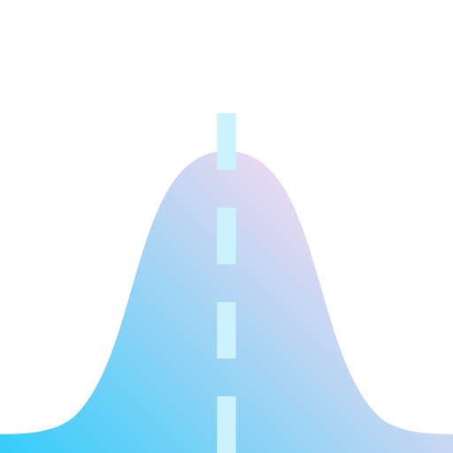

Hello
I am a linguist & cognitive scientist at the University of California, Santa Cruz. My research interest is in language processing, especially the coordination of syntactic information in memory. I teach courses at UCSC on psycholinguistics, experimental methods & design, language and memory, and syntax.
I completed my Ph.D. in Linguistics at UMD (2008), supervised by Colin Phillips (dissertation). Before that, I did my A.B. in Molecular Biology at Princeton University (2003), with Certificates in Neuroscience and in Linguistics.
In 2025-2026, I am the Faculty Director for Curriculum and Enrollment in the Division of Humanities.
Teaching
- Summer 2026 LING50 Introduction to Linguistics (Summer Session II; Async)
- Office hours: By appointment
- For student collaborators: "Working Together"
What's Happening
- Spring 2026
- A new article on prediction and commitment in Santiago Laxopa Zapotec, co-authored with Jack Duff, Delaney Gomez-Jackson, Fe Silva Robles & Maziar Toosarvandani:
- Delayed structural prediction for relative clauses: A new argument for learning to parse from Santiago Laxopa Zapotec. Cognition, 275, 106599. https://doi.org/10.1016/j.cognition.2026.106599
- Winter 2026
-

A new article on subject islands and information structure, co-authored with Mandy Cartner, Matthew Kogan, Nikolas Webster & Ivy Sichel: - Subject islands do not reduce to construction-specific discourse function. Cognition, 271, 106467. https://doi.org/10.1016/j.cognition.2026.106467
- A new manuscript with first author Matthew Kogan:
- (PsyArXiv) Decomposing subject retrieval: Diverging interference profiles for agreement and thematic dependencies in English. https://doi.org/10.31234/osf.io/83nha_v1
- "Subject" dependencies are not uniform & retrieval is relativized to dependency type. Sometimes Goals/Indirect Objects interfere and sometimes they don't!
- 𒑳 We'll be presenting our research at HSP39:
- Grammatical resumptive pronouns facilitate processing before they are perceived (Short talk with Mandy Cartner*, Maziar Toosarvandani & Ivy Sichel)
- Syntactic positional similarity modulates interference for thematic and agreement dependencies (Long talk with Matthew Kogan*, Ruoqing Yao, & Aditi Borra)
- Verbatim recall is stable and pervasive across individuals (Poster with Brian Dillon & Sujin Lee)
- ፨ We kicked off our new CITRIS-funded project Understanding Computational Thinking and Skill Development with Large Language Models with PI Leilani Gilpin & Co-PIs Pranav Anand & Hannah Hausman.
- Summer 2025
- A new article on prediction and interference, co-authored with Maayan Keshev, Kai Hinkle & Brian Dillon:
- Predictability of the retrieval site does not modulate interference: evidence from reflexive attraction. Open Mind, 9, 2031-2065. https://doi.org/10.1162/OPMI.a.275
- A new encyclopedia article, co-authored with Brian Dillon, in the Open Encyclopedia of Cognitive Science:
- Sentence Processing. In M. C. Frank & A. Majid (Eds.), Open Encyclopedia of Cognitive Science. MIT Press. https://doi.org/10.21428/e2759450.624d819a
- We will be at CogSci 2025 (30 Jul - 2 Aug; San Francisco):
- (lecture) How linguistic boundaries form encoding contexts in memory: Evidence from temporal order effects with first authors Lalitha Balachandran & Stephanie Rich
- (poster) P2-Y-221 Who and when gets the race? Two processing routes for the advantages and penalties of pronominal ambiguity resolution with first author Ruoqing Yao
Other Recent Papers
⌜ 2024 ⌟
- A tale of two Tagalogs with first author Jed Sam Pizarro-Guevara. Glossa: a journal of general linguistics, 9(1). doi:https://doi.org/10.16995/glossa.11032
⌜ 2023 ⌟
- Encoding interference in verb-initial languages. In Koizumi, M., Ed., Issues in Japanese Psycholinguistics from Comparative Perspectives, Volume 1: Cross-Linguistic Studies. doi:0.1515/9783110778946
⌜ 2022 ⌟
-
Processing reflexive pronouns when they don’t announce themselves with Sandra Chung and Manuel F. Borja. Glossa Psycholinguistics 1(1). doi:10.5070/G601174.
Data archive: doi:10.17605/OSF.IO/BWCZT. - Extraction from English RCs and Cross-Linguistic Similarities in the Environments That Facilitate Extraction with first author Jake Vincent & Ivy Sichel. Languages, 7(2), 117. Open Access, doi:10.3390/languages7020117.
- Memory for linguistic features and the focus of attention: evidence from the dynamics of agreement inside DP with Brian McElree. Language, Cognition & Neuroscience. DOI 10.1080/23273798.2022.2057559.
- Evidence for a universal parsing principle in Santiago Laxopa Zapotec with Kelsey Sasaki, Steven Foley, Jed Pizarro-Guevara, Fe Silva-Robles, & Maziar Toosarvandani. Unpublished manuscript. Data archive: doi:10.17605/OSF.IO/2WGD8.
(Less) recent Papers
⌜ 2021 ⌟
- On the universality of intrusive resumption: Evidence from Chamorro and Palauan with Sandra Chung. Postprint. Natural Language and Linguistic Theory, 39(3), 759-801. Data archive: DOI 10.17605/OSF.IO/H5YAV.
⌜ 2020 ⌟
- Hierarchical structure and memory mechanisms in agreement attraction with Julie Franck (U Genève). PLoS ONE, 15(5). 10.1371/journal.pone.0232163. Data archive: DOI 10.17605/OSF.IO/J85SP.
- The predictive value of Tagalog voice morphology in filler-gap dependency formation with first author Jed Sam Pizarro-Guevara (UCSC). Front Psychol, 11, 517. 10.3389/fpsyg.2020.00517
⌜ 2019 ⌟
- Acceptability with the tools of signal detection theory with Brian Dillon. To appear in G. Goodall, Ed., Cambridge Handbook of Experimental Syntax. Preprint.
- Language processing experiments in the field with Sandra Chung. To appear in J. Sprouse, Ed., Oxford Handbook of Experimental Syntax. eScholarship (UC Repository)
- A new argument for co-active parses ... with Brian Dillon, Caroline Andrews, & Caren Rotello. J Exp Psychol: Learn Mem Cogn, 45, 1271-86. doi:10.1037/xlm0000649 Preprint.
⌜ 2018 ⌟
- Grammatical licensing and relative clause parsing ... with Sandra Chung and Manuel F. Borja. Cognition, 178, 207-221. May 2018 postprint
- English resumptive pronouns ... with first author Adam Morgan (UCSD). Linguistic Inquiry, 49 861-876. PDF; Postprint: https://osf.io/nj2mq/.
- Developing incrementality ... with first author Emily Atkinson (UMich). Cognition, 179, 132-149.
... Past events ↯↯↯
Lab members
- current members
- Vishal Arvindam
- Richard Bibbs
- Matthew Kogan
- Ruoqing Yao
- grad alums
- Nate Arnett
- Lalitha Balachandran
- Netta Ben Meir
- Scarlett Clothier-Goldschmidt
- Jack Duff
- Duygu Demiray
- Steven Foley
- Margaret Kroll
- Anelia Kudin
- Chelsea Miller
- Karl DeVries
- Adam Morgan
- Jed Pizarro-Guevara
- Stephanie Rich
- Kelsey Sasaki
- Matt Tucker
- Elifnur Ulusoy
- Nick Van Handel
- Jake Vincent
- Claire Miller Willahan
- undergrad/R.A. alums
- Ashley Ippolito
- Emily Pendleton
- Caroline Andrews
- Joseph King
- Melanie Esver
- Sylvia Soule
- Shayne Sloggett
- Sarah Napoli
Dissertations and Theses
2025
- Vishal Arvindam. Seek and Ye Shall Retrieve: On the Representation and Processing of Telugu Anaphora. Ph.D. Dissertation, September 2025.
2024
- Stephanie Rich. The Features We Use and the Features We Lose: Encoding, Maintenance and Retrieval. Ph.D. Dissertation, June 2024.
- Lalitha Balachandran. Memory knows its bounds: Encoding contexts in sentence comprehension. Ph.D. Dissertation, September 2024.
2023
- Matthew Kogan. Maintaining Syntactic Positions and Thematic Roles in Memory. M.A. Thesis, June 2023.
- Elifnur Ulusoy. Connectivity and case effects in agreement attraction: The case of Turkish. M.A. Thesis, June 2023.
2021
- Jake Vincent. Extraction from Relative Clauses: An Experimental Investigation into Variable Island Effects in English—or—This is a Dissertation That We Really Needed to Find Someone Who'd Write. Ph.D. Dissertation, June, 2021.
- Anelia Kudin. Implicit Agents in Ukrainian: Evidence from Retrieval Interference in Sentence Processing. M.A. Thesis, June, 2021.
2020
- Steven Foley. Case, agreement, and sentence processing in Georgian. Ph.D. Dissertation, June, 2020.
- Margaret Kroll. Comprehending ellipsis. Ph.D. Dissertation, June, 2020.
- Jed Pizarro-Guevara. When human universal meets language specific. Ph.D. Dissertation, June, 2020.
2016
- Nathan V. Arnett. Subject encodings & retrieval interference. Ph.D. Dissertation, December, 2016.
- Chelsea Ann Miller. Limited, syntactic reactivation in noun phrase ellipsis. M.A. Thesis, June, 2016.
2015
- Scarlett Clothier-Goldschmidt. The distribution and processing of referential expressions: evidence from English and Chamorro. M.A. Thesis, June, 2015.
2013
- Adam Milton Morgan. Bridging the gap between acceptability and production of English resumptive pronouns. M.A. Thesis, June, 2013.
Research Areas
Syntax and memory management
A major question our lab focuses on is how complex compositional objects, like sentences, are bound in working memory. We try to make progress on this question by studying how linguistic features, and feature systems, can act as "traffic signals" to access recent memories via prediction and retrieval. Some representative publications:
- Arnett, N., & Wagers, M. (). Subject encodings and retrieval interference. Journal of Memory and Language, 93, 22-54. 10.1016/j.jml.2016.07.005 Post-print (OSF)
- Dillon, B., Andrews, C., Rotello, C. M., & Wagers, M. (). A new argument for co-active parses during language comprehension. Journal of Experimental Psychology: Learning, Memory, and Cognition, 45, 1271-1286. Preprint here: https://osf.io/qdmfh/. Repository for materials, data and analysis code.
Psycholinguistics outside the lab
My collaborators and I have focused on developing sentence processing research in smaller or lesser-studied languages. For the past several years, I've been investigating language processing in Chamorro, an Austronesian language of the Mariana Islands, together with Sandra Chung (UCSC) and Manuel F. Borja (Inetnun Åmut yan Kutturan Natibu, CNMI). Our research was supported by the NSF (2013-2016).
- Wagers, M., Borja, M.F., & Chung, S. () Grammatical licensing and relative clause parsing in a flexible word-order language. Cognition, 178, 207-221. Postprint. Experimental items, data, & supplementary materials.
- Wagers, M., Borja, M.F., & Chung, S. () The real-time comprehension of wh-dependencies in a Wh-Agreement language. Language, 91, 109-144. Postprint and 10.1353/lan.2015.0001 (publisher)
- Competition among pronouns in Chamorro grammar and sentence processing. handout used at Pronouns in Competition workshop (UC Santa Cruz).
- Wagers, M., Chung, S. In press. Language processing experiments in the field. In J. Sprouse (Ed.), Oxford Handbook of Experimental Syntax. Postprint.
- Chung, S., Wagers, M. On the universality of intrusive resumption: Evidence from Chamorro and Palauan. Unpublished manuscript.
Other lab members have been approaching problems in language processing from the perspective of underinvestigated languages. Jed Pizarro-Guevara has been working on Tagalog language processing, focused on the predictive value of Voice in interpreting A-bar dependencies in Tagalog.
- Pizarro-Guevara, J.S., Wagers, M. (2020). The predictive value of Tagalog voice morphology in filler-gap dependency formation. Front Psychol, 11, 517. 10.3389/fpsyg.2020.00517. Open Access.
Since 2018 Maziar Toosarvandani and I have convened z/lab, on sentence processing Zapotec. This research, expanded to include comparative studies with Hebrew ,is now supported by the NSF (2020-2024; BCS), with Co-PI Ivy Sichel.
- Pronouns over gaps in parsing? Relative clause parsing in Santiago Laxopa Zapotec. 93rd Annual Meeting of the Linguistic Society of America, New York, NY (Jan 6-9, 2019). With Steven Foley, Jed Pizarro-Guevara, Kelsey Sasaki, Fe Silva Robles, & Maziar Toosarvandani. Slides.
- Animate intruders. 33rd Annual Meeting of the CUNY Human Sentence Processing Conference, Amherst, MA (Mar 19-21, 2020). Slides
Experimental methods in linguistics
We're broadly interested in finding creative, useful new practices in the design and analysis of language experiments.
- Dillon, B., & Wagers, M. In press. Acceptability with the tools of signal detection theory. In G. Goodall (Ed.) Cambridge Handbook of Experimental Syntax. Preprint.
- Using signal-detection theoretic tools, like ROC curve analysis, to draw conclusions about gradience in acceptability judgments. Preprint provides code and tutorials.
- Morgan, A., & Wagers, M. (2018). English Resumptive Pronouns are More Common where Gaps are Less Acceptable. Linguistic Inquiry, 49, 861-876. Postprint: https://osf.io/nj2mq/.
- Comparing acceptability and production measures of English resumptive pronouns.
- Kroll, M., & Wagers, M. Is working memory sensitive to discourse status? Experimental evidence from responsive appositives. Poster presented at XPrag 2017, Cologne, Germany, Jun 21-23, 2017. Poster: https://osf.io/95hjq/.
- Manipulating acceptability with Questions-under-Discussion (QUDs).
- Anand, P., Andrews, C., Farkas, D., & Wagers, M. (2011). The exclusive interpretation of plural nominals in quantificational environments. In N. Ashton, A. Chereches, & D. Lutz (Eds.) Proceedings of. the 21st Semantics and Linguistic Theory Conference. 176-196. Open Access.
- Correlating measures of plural ex-/inclusitivity.
Past Teaching
- Undergraduate
- Intro. to Linguistics (LING50): Su20 syll (remote), Su21 syll (remote), Sp22 syll, F23
- Language & Cognition (LING155)
- Language & Mind (LING80D)
- Psycholinguistics I (LING157/171): W20, W21, F21, S24, F24
- Psycholinguistics II (LING158/172): W22, W23
- Syntactic Structures (LING111): W20
- Typology (LING124): <W20 syll, W20 schd>
- Graduate
- Psycholinguistics (LING257): W20, W21, S22
- Adv. Psycholinguistics (LING258)
- Proseminar: Experimental Linguistics (LING280): S21, S25
- Research Seminar in Psycholinguistics (LING279)
- Fall 2022 LING279 Research Seminar in Psycholinguistics (graduate): Language Processing in Verb-initial Settings